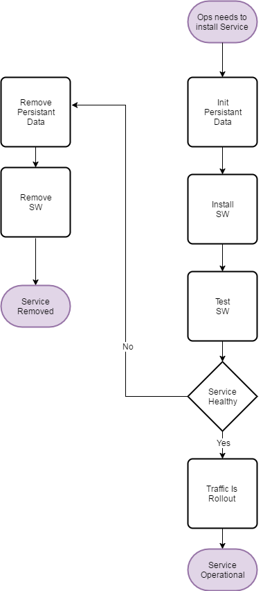

Keystone Deployment¶
Schema¶
Rationale¶
- Ops Team need to deploy a new service.
- If the service is unhealty, it gets removed.
- If the service is healty, it reaches the operational.
Keystone Change¶
Schema¶

Rationale¶
- Ops Team need to:
- Use Case 1: remove a service.
- Use Case 2: update a service.
- Use Case 3: rollback a service.
- Once the traffic is drain:
- Use Case 1: the service is removed.
- Use Case 2: the service is updated.
- Use Case 3: the service is rollback.
- Once the update/rollback is performed, the traffic is rollout.